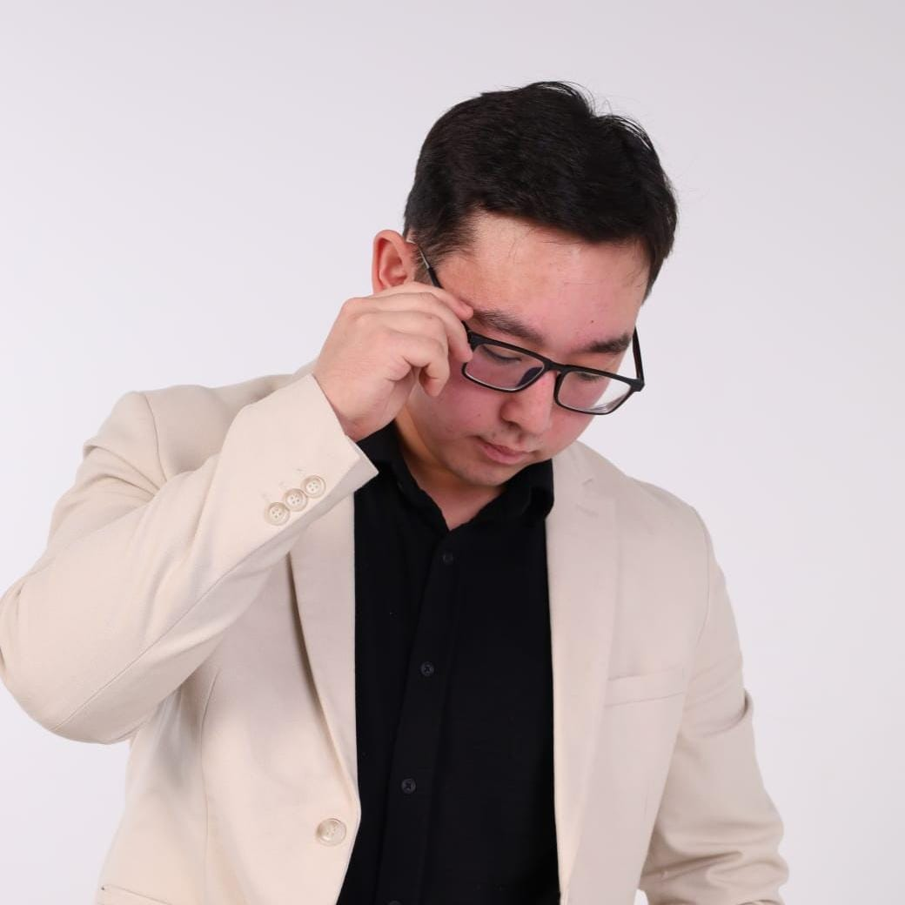

Batyrbek Adilkhan
Pages: Home + Menu
I am interested in IT and programming. I enjoyed working on the cafe website and creating the Home and Menu pages.
Alibek Kantarbay
Pages: Contact + Team
I am interested in technology and enjoy working on different tasks. I liked working on the Contact and Team pages.
Dauletkali Boranbay
Pages: About Us + Gallery
I am interested in IT and web development. I enjoyed working on the information about the cafe and adding photos to the Gallery page.